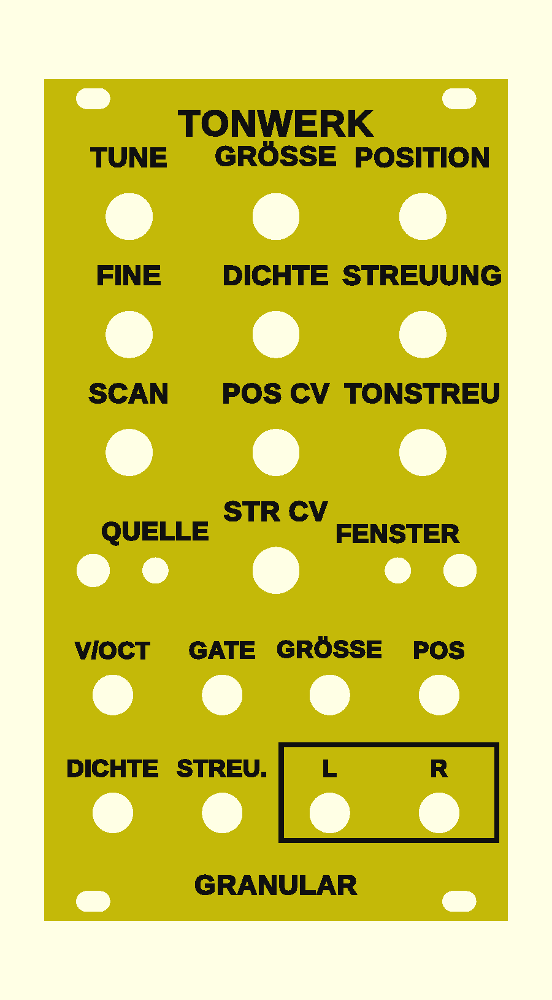

Tonwerk Granular as a Eurorack module
A fourth firmware for the same boards as the wavetable module: the sound engine of the plugin Tonwerk Granular. The module keeps cutting short grains from a sound source, each with its own envelope, pitch, direction and place in the stereo field, up to 40 at once. A choir turns into clouds, glass into sparks and a rhythm into a stutter.
Overview

- The same grain cloud as the plugin: when a grain starts, how long it lasts and how high it sounds is computed exactly as in the plugin. A test on the computer compares every source, every window, the grids, the filters and the LFO with the plugin.
- Nine sources from the plugin, 4 seconds each: choir, glass, strings, plucks, organ, wind, metal, sine, rhythm. They are flashed into the module with the firmware; it does not load files of your own.
- Stereo: the grains spread across the stereo field, the outputs are L and R.
- One voice: V/OCT, GATE and CV for grain size, position, density and spray.
- A front panel of its own; the preview shows it yellow with black lettering, the colours are up to you.
This firmware is tested on the computer; it has never run on an ESP32. Every grain reads from the PSRAM; with 40 grains I estimate up to half a core.
Operation
The front is the same as on the wavetable module, only the lettering differs. The WARP button is called QUELLE (source) here, the FILTER button FENSTER (window). Layers, pick-up, holding versus tapping, saving and calibration work exactly as described there.
All knobs
| Knob | Normal | QUELLE held | FENSTER held |
|---|---|---|---|
| TUNE | Tuning ±2 octaves in semitones | Attack, 1 ms to 10 s | Filter: off, lowpass 12, lowpass 24, highpass 12, bandpass (default off) |
| FINE | Fine tuning ±50 cents | Decay, 5 ms to 10 s | Cutoff, 20 Hz to 20 kHz |
| GRÖSSE | Length of a grain, 5 ms to 1 s | Sustain | Resonance |
| POSITION | Where in the source the grains come from, from start to end | Release, 5 ms to 10 s | Key tracking of the filter |
| DICHTE | Grains per second, 1 to 200 | Randomness: how irregularly the grains come | LFO rate, 0.05 to 20 Hz |
| STREUUNG | How far around the position a grain may start, up to the whole source | Reverse: the share of grains that run backwards | LFO target: none, position, spray, size, density, pitch, cutoff |
| SCAN | The position moves through the source. In the middle it stands still, to the right it runs forwards, to the left backwards, at the ends twice as fast as the source itself. | Grid of the pitch scatter: free, octaves, fifths | LFO amount: middle 0, left inverted |
| TONSTREU | How far a grain's pitch may stray, up to two octaves; the first part of the travel covers the first semitones | Stereo width (default 60 %) | LFO shape: sine, triangle, ramp down, ramp up, square, random |
| POS CV | Attenuator for the POS jack: middle 0, right full, left inverted | – | – |
| STR CV | Attenuator for the STREU. jack: middle 0, right full, left inverted | – | – |
Sources (tap QUELLE, LED 1)
| LED 1 | Source | What it holds |
|---|---|---|
| yellow | Choir | A sung a e i o u, three voices with vibrato. Default. |
| cyan | Glass | Struck glass every half second, on the note and its octaves. |
| magenta | Strings | Seven detuned saws, bowed in slowly, with a breathing lowpass. |
| green | Plucks | Eight plucked strings. |
| orange | Organ | Drawbar organ, with a fast rotor from halfway on. |
| blue | Wind | Noise through a wandering band, over a rumble. |
| violet | Metal | FM at inharmonic ratios, the index swelling up and back. |
| white | Sine | A pure sine: the colour comes from the grains alone. |
| red | Rhythm | Two bars of sixteenths at 120 BPM: kick, hats and chord stabs. |
All sources sit on C4 and are equally loud. Tapping FENSTER picks the shape of a grain, LED 2 shows it: bell (yellow, soft, default), flat (cyan, short fades, the grain sounds almost whole) or struck (magenta, a steep start, then dying away). Both LEDs light up with the envelope and dim with it, never fully off.
Striking and pitch
- With a gate
- A rising edge at GATE starts the envelope and reads from the position again: a source that SCAN runs through starts over. When the gate falls, the release begins.
- With V/OCT only
- While the gate is on, or no cable is in GATE, a jump at V/OCT of at least half a semitone does the same, as with the Physical firmware. A glide only moves the pitch.
- Cloud
- Without a gate cable the cloud sounds all the time; POSITION, SCAN and an LFO at the POS jack move it.
- Pitch
- 0 V plays the sources at their own pitch (C4), 1 V per octave. Every new grain takes the pitch present at V/OCT. A grain running faster than the source reads a copy filtered beforehand, so nothing folds back.
Jacks
| Jack | Range | What it does |
|---|---|---|
| V/OCT | −1 to +7 V | Pitch, 1 V per octave, 0 V = C4. A jump strikes (see above). |
| GATE | from about 1.4 V | Rising: strike. Falling: release. Permanently on without a cable. |
| GRÖSSE | ±5 V | Added to the grain size, 5 V over the knob's whole travel. |
| POS | ±5 V | Shifts the position, through the POS CV attenuator; past the end it carries on from the start. |
| DICHTE | ±5 V | Added to the density, 5 V over the whole travel. |
| STREU. | ±5 V | Shifts the spray, through the STR CV attenuator. |
| L (output) | ±5 V | Left channel. |
| R (output) | ±5 V | Right channel. For mono set the width to 0, then both are the same. |
The outputs are at module level. They are far too loud for headphones; always go through a mixer or an output module.
First patches
- Choir cloud
- Choir, no gate cable, GRÖSSE a little past the middle, DICHTE half, STREUUNG a third, SCAN slightly right. L and R into the mixer.
- Glass sparks
- Glass, FENSTER on struck, GRÖSSE small, STREUUNG fully right, TONSTREU fully right and the grid set to octaves in the QUELLE layer.
- Stutter
- Rhythm, flat window, DICHTE on a few grains per second, randomness (QUELLE held, DICHTE) at 0, a random CV at POS.
- Melody
- Plucks or strings, gate and V/OCT from the sequencer, SCAN right, in the QUELLE layer sustain at 0 and a short decay.
Front panel
The same three variants as for the wavetable module (build guide, step 2), with this firmware's lettering: raised lettering, engraved lettering and inlaid lettering (3MF, two colours). For the raised print start with the panel's colour and change to the lettering's at 2.5 mm.
Firmware
The firmware is one file, tonwerk-granular.bin, written to address 0x0 as in the build guide, step 8. It carries its nine sources and is therefore 6.7 MB; writing it takes one to two minutes. The sources sit where the wavetable firmware keeps its tables: after flashing tonwerk-modul.bin again, it computes them once more at its first start.
Flashing over USB erases the saved settings and the calibration. So calibrate again afterwards. Over Wi-Fi they are kept, with the left button held at power-on: update over Wi-Fi. If both LEDs blink red, the sources are missing: write the whole file to 0x0 again.
As of 31 October 2026. Source code and front panel are on GitHub under the same PolyForm Noncommercial License as the plugins: building one for yourself yes, selling only with permission.